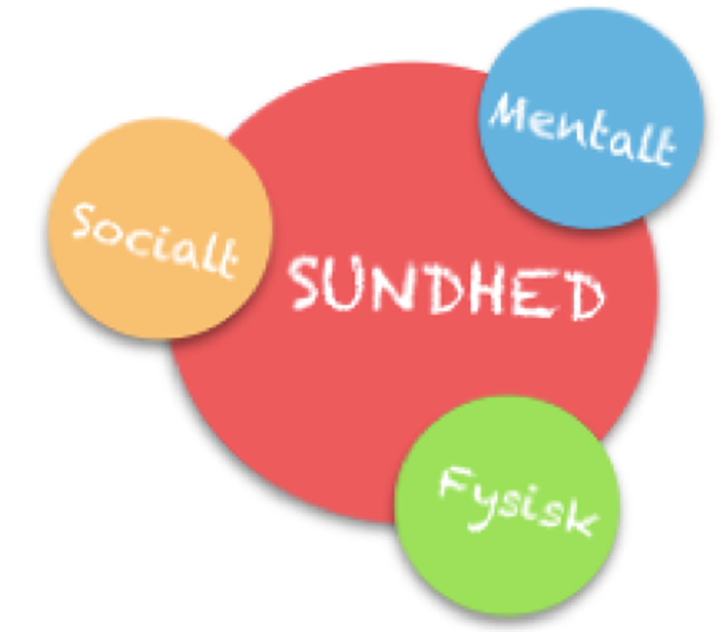
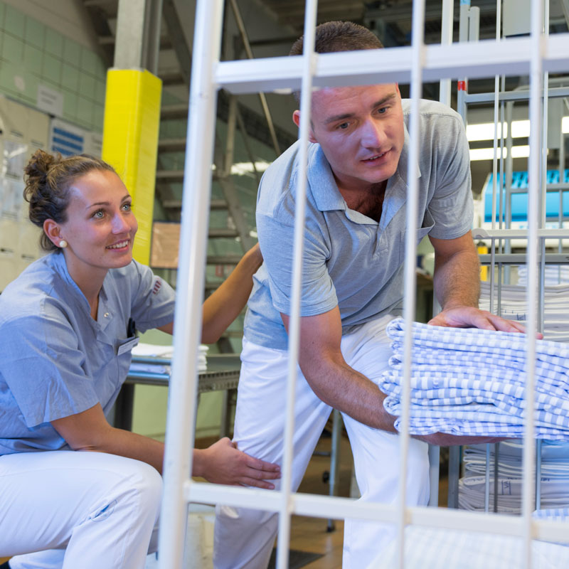
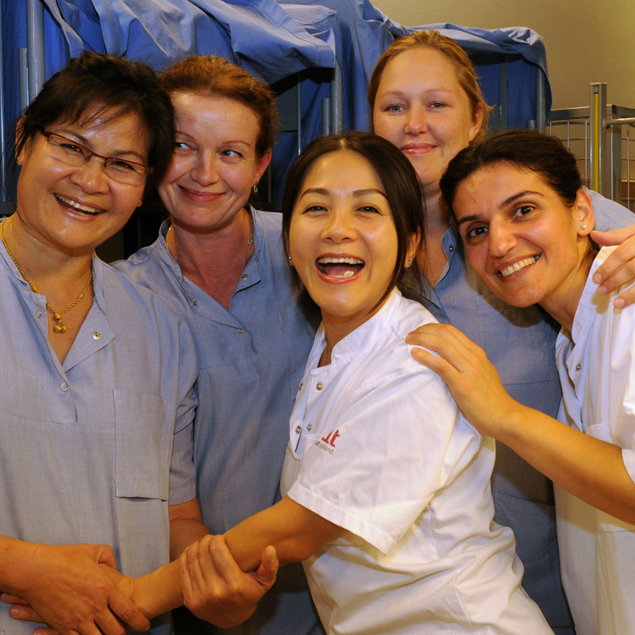
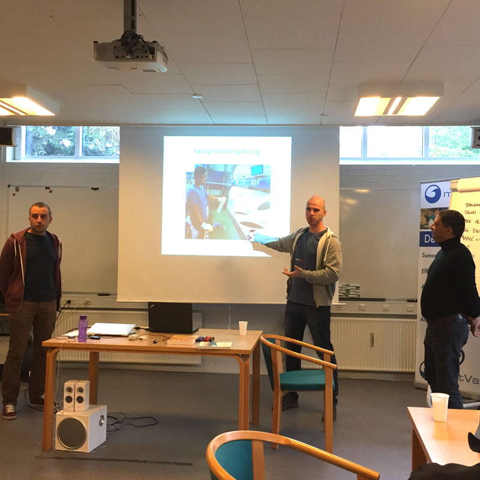

Målsætningen er:
Vi skal blive sundere af at arbejde på midtVask.
Når vi arbejder med sunhed på midtVask, er det ud fra at vi ser på hinanden som hele mennesker der både har et privatliv og et arbejdsliv. Og at det derfor ikke kun handler om gulerødder og motion, men om vores mentale, sociale og fysiske sundhed.
Alle nye medarbejdere bliver, når de starter på midtVask, introduceret til vores målsætning og sundhedstrategien, og de tilbud der er på midtvask. På den måde sikrer vi gennem dialog, at alle fra starten har kendskab til baggrunden for sundhedsarbejdet og derved også har mulighed for at agere i forhold til egen og kollegaers sundhed.

På det fysiske område betyder god sundhed for os, at vi vil have færre smerter, færre arbejdsulykker og lavt sygefravær. Vi skal holde os sunde og stærke i hele vores arbejdsliv og mere til. Derfor prioriterer vi, at vi skal blive stærkere og komme i bedre form. Det opnår vi ved, at vi kender de sunde valg, at vi ved, hvad god ergonomi er, og hvordan kroppen fungerer, og at vi deltager i elastiktræning hver gang og tager hånd om egen sundhed og deltagelse.
Vores sociale sundhed hænger i høj grad sammen med, at vi tror på os selv og indgår i meningsfulde og sunde relationer på arbejdspladsen. Læring og udvikling sker i en social sammenhæng, og de sociale relationer mellem hinanden på arbejdspladsen er af største vigtighed. Gode strukturer og samarbejdsrelationer er vigtige at opbygge. Klare mål, som man kan arbejde hen mod og fælles arbejdspladsværdier medvirker til vores sociale sundhed. God trivsel og lavt sygefravær kan måles og mærkes, og teamorganisering, tavlemøder fremmer dialog og samarbejde, ligesom sociale aktiviteter prioriteres højt.


Vores mentale sundhed forbedres, når vi hver især kan udfolde vores evner og håndtere dagligdagens udfordringer og stress, så vi positivt og frugtbart kan arbejde produktivt og yde vores bidrag til fællesskabet. Derfor er det vigtigt, at vi hele tiden udvikler os og lærer nyt, hvorfor midtVask prioriterer kompetenceudvikling og uddannelse højt.